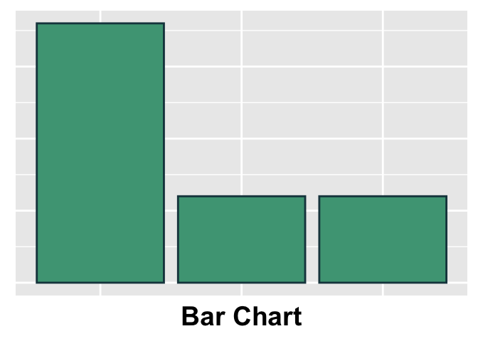
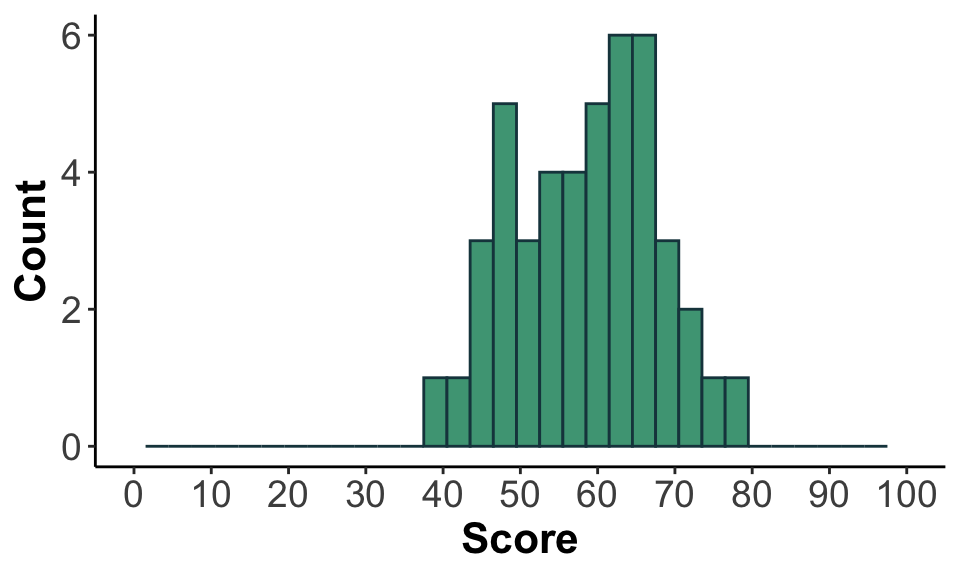

Intro to Today’s Lab
During today’s lab, you’ll apply some of the concepts discussed during this week’s lecture and familiarise yourself with SPSS. Each lab consists of several tasks, with corresponding questions you can answer. Please note that the questions are not required and not marked, although they do provide a helpful source of formative feedback that will help you gauge your understanding.
Imagine that you’re a statistician in a Psychology department, and an instructor has asked for your help in selecting a proper assessment for their course. They have tested 4 different assessments, and they want to select the option that best captures students’ abilities, without being too difficult or too easy.
They collected some pilot data from their RAs to help check for typos/question clarity, and then gathered a sample of data from several students across 4 sections of their course.
| Variable Name | Description |
|---|---|
| ID | Participant ID |
| Role | Levels: RA; Student |
| Age | Age in years |
| ClassTime | Time of class in which assessment was given |
| Gender | Levels: 1=Male, 2=Females, 3=Nonbinary |
| A | Assessment Version A Raw Scores; min = 0, max = 50 |
| B | Assessment Version B Raw Scores; min = 0, max = 50 |
| C | Assessment Version C Raw Scores; min = 0, max = 50 |
| D | Assessment Version D Raw Scores; min = 0, max = 50 |
Learning Objectives
At the end of this lab, you will be able to:
- Import data into SPSS
- Check and reset variable types and codes
- Check the descriptive statistics of your data
- Produce histograms to visually assess your data’s distribution
- Assess the normality of your variables
Import Data
In this course, you’ll be using SPSS to perform the majority of your tasks. You can download today’s data onto your device by clicking here or checking this week’s folder on Learn (requires university login).
Your Task
Import ‘Week1LabData.csv’ into SPSS. Once you have imported the file, save it as ‘Week1LabData_SPSS’ in the folder of your choice on your device. You’ll be using these data for next week’s lab. Note the difference in filetype between ‘Week1LabData’ and ‘Week1LabData_SPSS’.
Click here for a hint
Check under the File tab in SPSS. What is the difference between the ‘Open’ and ‘Import Data’ options?
Click here for the solution
Click Import Data under the File tab. The data are in .csv format, so choose CSV Data. Navigate to the folder where you’ve stored ‘Week1LabData.csv’ and select the file.

A box will pop up that allows you to review the data before import. In this example, the first row of our data is the name for each column, so the ‘First line contains variable names’ should remain checked. Note that if you import data without column names, you’ll need to uncheck this box. Click ‘OK’.
To save your data, make sure the data window is the primary window (not the output window), and click File > Save As. Name your file ‘Week1LabData_SPSS’ and save it to the folder of your choice on your device.
Check Variable View
The Variable View tab allows you to make adjustments to your variable characteristics. Recall that data can be measured in multiple formats, and these scales of measurement will affect how data may be described and analysed. In Variable View, you can adjust this measurement format. This is useful, as SPSS does not always properly identify your variable format.
Additionally, you can add labels to your variable levels in Variable View. This is useful when nominal data are coded numerically (e.g., ‘No’ = 0; ‘Yes’ = 1). When you add labels, you can easily see what the values of nominal variables represent. It is important to always include a coding key, so that anyone who works with the data will know how to interpret the numeric labels used and can make appropriate interpretations.
Your Tasks
Have a look at your data - were all variables imported into SPSS as the correct measurement type? If not, change the variable’s measure so that it appropriately describes the data.
Add a key to the Gender variable so that 1 = ‘Male’, 2 = ‘Female’, and 3 = ‘Nonbinary’.
Click here for a hint
Do the labels used by SPSS match the scales of measurement you’ve learned about in RMAP (Nominal, Ordinal, Interval, Ratio)? Think about what kind of data each of your variables represents.
Click here for the solution
Adjust Variable Measure Format
To check that your variables are labeled as the correct scale of measurement, look at the Measure column under the Variable View tab.

SPSS labels the data as:
- Nominal: data that fall into discrete categories that have no information regarding order (e.g., eye colour)
- Ordinal: data that fall into discrete categories that have some kind of ordering information (e.g. Likert Scale responses)
- Scale: continuous/numerical data; data have some kind of numeric relationship and could technically be measured to infinite decimal places, if the measurement was actually capable of doing so.
To adjust the measure type, select the Measure box for a single variable and click the arrow that appears.
IDis represented as a number, but there really is no numeric relationship between the numbers (e.g. someone with an ID = 40 didn’t complete the study in twice the time of someone with an ID = 20). Technically, the numbers are ordered in a way that reflects the order in which they completed the study, so this could be considered an ‘Ordinal’ variable.Roleis nominal. It can be captured in discrete categories and there is no inherent order.Ageis continuous. Someone who is 12 is twice as old as someone who is 6, and you could measure age up to infinite decimal places if you had a perfectly precise measurement. This can be considered a ‘Scale’ variable.Gendercan be captured categorically, so it is also nominal.ClassTimeis ordinal, because, as with ID, there is no numeric relationship between these values but the times do have some sense of order (10 is earlier than 13, e.g.).The assessments were all measured on a continuous scale.
Adding Labels to Variables
To associate a label with each value of a variable, you’ll use the Values column under the Variable View tab.
Select the Gender x Values cell and click the dots to bring up the Value Labels box. Use the \(+\) to add a new label. In the Value column, type the value exactly as it is recorded in your data. In the Label column, add the label you would like to associate with that specific value. Continue adding labels using \(+\) until you’ve labeled all values in the Gender column.

Transforming Variables
There will be times that you would like to transform a pre-existing variable in some way. For example, sometimes you need to reverse code answers on an assessment (e.g., Likert-scale values of 1 should be swapped to 5, and vice versa). In this example, imagine you want to create a variable that indicates whether someone is in a morning or afternoon session.
Your Task
Transform the ClassTime variable to create a new
variable titled Session. The Session variable
should have values of ‘Morning’ (students in AM classes) and ‘Afternoon’
(students in PM classes).
Click here for a hint
You don’t need to do this by hand. You also won’t need the Variable View tab.
Click here for the solution
To transform a current column into a new column, navigate to
Transform > Recode Into Different Variables. Put
ClassTime in the ‘Input Variable’ box. Add the new variable
title, Session to the ‘Output Variable’ box under ‘Name’,
then click ‘Change’. Click ‘Old and New Values…’

To change the current values into the new values, make sure the ‘Output variables are strings’ box is checked so that you can add character data as a label (rather than just numeric). In the ‘Old Value’ box, type ‘9’ under ‘Value’. In the ‘New Value’ box, type ‘Morning’ in the ‘Value’ box. Then click the ‘Add’ button next to the ‘Old –> New’ box. You should see your old and new values appear in the box. Continue doing this for the rest of your class times. Once you’re finished, it should look like this if you’ve done it properly:

Because ‘Afternoon’ has 9 letters, you’ll need to switch the value in
the ‘Width’ box to 9, otherwise it will be cut off. Click ‘Continue’,
then ‘OK’. The variable Session will appear in your Data
View window.
Computing Variables
Other times, you’ll need to use your variables to compute a new value or variable (e.g., a composite score from subscores). SPSS allows you to perform a wide range of calculations on your variables. In this case, you have raw scores for each assessment, and you need to compute the percentage.
Your Task
Use each of the raw scores to calculate 4 new variables that reflects their mark as a percentage.
Click here for a hint
The maximum possible raw score for each assessment is 50.
Click here for the solution
To compute a new value from a current column, navigate to
Transform > Compute Variable. Type a name for the new
variable (e.g. Apercent) into the ‘Target Variable’ box.
Put A in the ‘Numeric Expression’ box, then type the rest
of the numeric expression:

Click ‘OK’, and you should have a new column that shows the score for A as a percentage. Repeat this step for the remaining assessments.
Filtering Data
Sometimes, you may only want to analyse a subset of your dataset. In this case, the instructor is only interested in the test values from the students, as the RAs were only taking the assessment to check for typos, and their work was not reflective of students taking the course.
Your Task
Filter out the RA data, so that only the student data will be used for additional analysis.
Click here for a hint
You don’t need to delete anything from the dataset.
Click here for the solution
To filter your data, navigate to Data > Select Cases.
Click ‘If condition is satisfied’, then the ‘If…’ box. Here, you want to
specify that you only want to include data if the Role
variable is equal to ‘Student’. You’ll enter the following expression in
the first box.

Make sure to use quotes around ‘Student’. This is case-specific, so make sure you type ‘Student’ and not ‘student’. Click ‘Continue’, then ‘OK’. A new filtering variable will appear, and slashes will appear over the row numbers of the ‘RA’ variables. As long as the filtering variable exists, they will not be included in any of the steps you take going forward.
If you’d like to remove the filter, simply delete the filter variable.
Check Frequency Data
Before doing any sort of analysis, it’s important to first check the data to make sure everything is as expected. With categorical data, one way we can do this is to inspect the frequency of observations in each group. When doing this, it allows you to check the following:
- Are observations distributed relatively equally or are there major differences across groups?
- Are there any groups with a limited number of observations?
- Are there any missing datapoints?
- Are there any values outside the expected range?
Your Task
Check the frequency of the Gender variable. Make sure to display a frequency table.
Are any of these groups limited in size? If so, how might this affect your ability to make generalisable claims about this group?
Click here for a hint
You’ll find what you need under the Analyze tab.
Click here for the solution
Select Analyze>Descriptives>Frequencies. Select Gender and use the arrow to move it into the Variable box. Make sure ‘Display frequency tables’ is checked.

Visualise Distribution of Data
Another useful way of visualising the data is to check how your variables are distributed. Depending on the type of data you have, you could use a bar chart or a histogram.

Your Task
Produce plots to visualise the distribution of each of your variables. Make sure to use the proper plot type given the type of variables you have.
Click here for a hint
A histogram will allow you to visualise the distribution of continuous variables. Bar plots allow you to check the distribution of categorical data. You’ll need to produce a separate plot for each variable.
Click here for the solution
For Categorical Variables:
Select Graphs>Bar. Select the chart type you’d prefer. When you’re checking the distribution of a single variable, you would use a ‘Simple’ plot. Use the arrow to add the variable you wish to view to the ‘Category Axis’ box. When looking at distributions of a categorical variable, you are plotting the total number of participants of each group, so you can leave the ‘Bars Represent’ portion at the default setting.

When checking the distribution of categorical variables, check whether all groups are well represented. Consider the questions from the Frequency Data portion of this lab.
For Continuous Variables:
Select Graphs>Histogram. Use the arrow to add the variable you wish to view to the ‘Variable’ box.

Have a look at the output. If a variable is normally distributed, most observations will fall near the mean, while more extreme values are less common.
Note: You can also produce both of these plots using Analyze>Descriptive Statistics>Frequencies and selecting the Charts option.Check Central Tendency & Measures of Variability
When preparing to perform analysis, one of the most important steps is to check the descriptive statistics of your variables. These values are useful summary metrics and may provide insight into patterns in your data.
Your Task
Check the measures of central tendency discussed in class. Make sure to use the proper central tendency measures given the variable type.
- Are the measures of central tendency similar within a variable?
- If not, what might this imply?
For all continuous variables, check the measures of variance described in class. These include the maximum, minimum, range, interquartile range, and standard deviation.
Click here for a hint
Although this is descriptive data, Analyze>Descriptive Statistics>Descriptives is not what you need.
Click here for the solution
To get all 3 measures of central tendency, you’ll need to select Analyze>Descriptive Statistics>Frequencies, then put the variables of interest into the ‘Variable(s)’ box. Click ‘Statistics’ and select the options for ‘Mean’, ‘Median’, and ‘Mode’, as needed.
Note that Gender, as a categorical variable, should only be described using Mode. The other variables can be described using all 3 measures.
For measures of variance, click ‘Statistics’ and select the options needed. For IQR, you’ll need to select ‘Quartiles’:

Data will be reported in table format in the output. To get the IQR, you’ll need to subtract the 25th percentile value from the 75th percentile value.
Identify Normal Distribution Thresholds
A normal distribution is a unimodal distribution of data in which observations fall symmetrically around the mean. Use the sliders to adjust the mean and standard deviation of the data to explore their effects on the shape of the distribution.
Remember that a perfectly normal distribution has the following criteria:
- 68% of scores fall within 1 SD of the mean
- 95% of scores fall within 1.96 SD of the mean
- 99.75% of scores fall within 3 SD of the mean
Your Task
Using these criteria, answer the following questions. You may need to use a calculator.
Click here for a hint
You’ll need to get two values from SPSS for each variable to perform these calculations. You may find it helpful to review the normal distribution material from the lecture.
Click here for the solution
You’ll need to extract the mean and standard deviation for each variable from SPSS:
| Variable | Mean | SD |
|---|---|---|
| A | 39.09 | 4.69 |
| D | 81.96 | 2.15 |
| Age | 23.04 | 7.74 |
We know that a normal distribution is symmetrical with the mean as its center point, so to get these thresholds, we can use the following equations:
68%: \(\bar{x}\ \pm\ 1\times s\)
95%: \(\bar{x}\ \pm\ 1.96\times s\)
99.75%: \(\bar{x}\ \pm\ 3\times s\)
So, for example, to get the upper 95% threshold for Assessment A, you would use the following equation:
\[39.09+1.96\times 4.69 = 48.28\]
To get the lower 99.75% threshold, as in the second question, you just subtract instead of add:
\[81.96-3\times 2.15 = 75.51\]
To get the range of data in which 68% of observations fall, as in the third question, you’ll do both:
\[23.04-1\times 7.74 = 15.3\]
\[23.04+1\times 7.74 = 30.78\]
Report and Interpret
Now that you’ve evaluated the assessments, write a paragraph with your results that you could present to the instructor, giving them a suggestion of which assessment they should use in their course. In this paragraph, please do the following:
Describe your sample as you would in a methods section.
Provide a recommendation for which exam the instructor should use in their course, using your results to support your suggestion.
Make sure to use APA style. Once you’re finished, compare your paragraph to the solution paragraph. Is there anything you included that is not in the solution? Is there anything you left out? Does your suggestion match the solution paragraph? If not, why not?
Click here for a hint
You might find the Purdue Owl website helpful for APA formatting. See the participants/sample section in this paper for an example of how you might describe your sample. You can see other examples here and here.
Click here for the solution
For this analysis, we examined results from 4 different assessments in an attempt to identify the one that most accurately captures the range of student abilities. Each of the assessments was presented to students in each of the instructor’s 4 courses, providing a total sample of 45 students between ages 17 and 52 (\(M\) = 23.04, \(SD\) = 7.74; 24 male, 19 female, and 2 nonbinary participants).
Student performance varied widely between the assessments (see Table 1).
Table 1
Assessment Scores - Descriptive Data

As the average score on Assessment A corresponded to a failing mark, this assessment is not recommended. Conversely, the average score on Assessment B was quite high. Most students scored close to the maximum possible score, suggesting that there is a ceiling effect (see Figure 1).
Figure 1
Assessment B Scores

Note. You cannot produce this figure with SPSS. This is just here to show you an example of an appropriate way to report your results with an APA-style figure.
Assessments D’s average was still too high, and the standard deviation of scores was quite small, indicating that it may not be accurately capturing the variability in student comprehension (see Figure 2).
Figure 2
Assessment D Scores

Assessment C had a reasonable average, as well as higher variability in the range of scores (see Figure 3). This indicates that, of these assessments, Assessment C may best capture the range of student abilities within the course.
Figure 3
Assessment C Scores
